《CSAPP（第三版）》读书笔记（第 1-3 章）
旧书清理系列，今年年初计划要看完的一本书，属于程序员必读系列。据说内容与《程序员的自我修养 — 链接、装载与库》有部分重合，但整体内容规划应该会更加全面。注：笔记超长。
第一章、计算机系统漫游
- （Page：2）在不同的上下文中，一个同样的字节序列可能表示一个整数、浮点数、字符串或机器指令。
- （Page：2）C 语言的成功离不开当初 Unix（由 C 语言编写）所获得巨大成功。C 语言的设计十分简洁，以至于 K&R 这本经典书籍仅用了 261 页便完整描述了 C 语言及其标准库。
- C Posix Library 是用于 Posix 系统的 C 标准库，属于 ISO C 的“超集”；
- ANSI C -> ISO C（目前）。
- （Page：3）编译系统（流程）：
- （Page：4）GNU 是 “GNU’s Not Unix” 的缩写。
- （Page：6）一个典型系统的硬件组成：
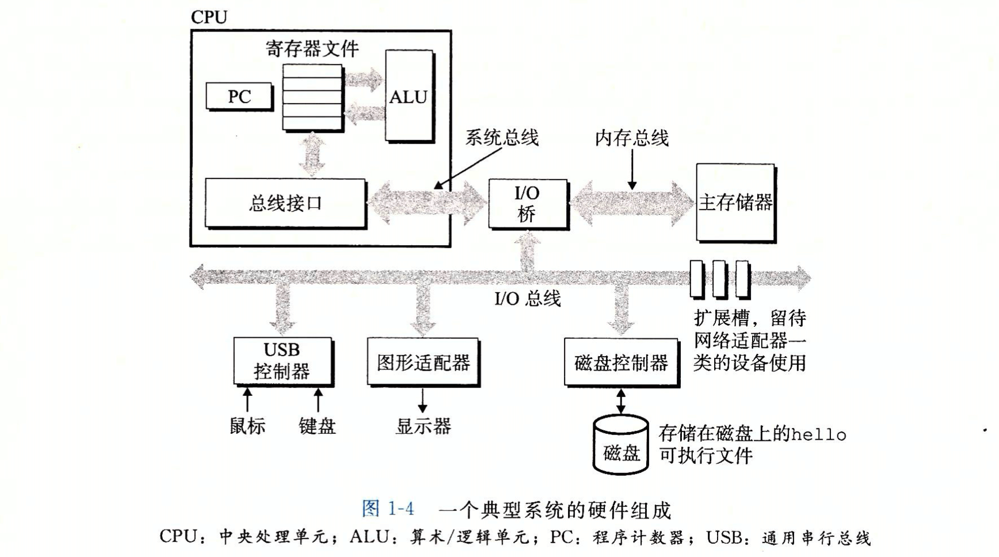
- 总线：负责携带信息字节并在各个部件间进行传递。其一次可以传递的信息大小为一个“字”。字长通常为 4 个字节（32 位）或 8 个字节（64 位）；
- I/O 设备：每一个 I/O 设备都通过一个控制器或适配器与 I/O 总线相连。控制器是 I/O 设备本身或者系统的主印制电路板上的芯片组。而适配器则是一块插在主板插槽上的卡；
- 主存：用来存放程序和程序处理的数据；
- 处理器：即 CPU，主要用于解释存储在主存中的指令。其核心是一个大小为一个字的存储设备（或寄存器），称为程序计数器（PC）。在任何时候，PC 都指向主存中的某条机器语言指令（的地址）。
- （Page：7）处理器的指令集架构与微体系架构：前者描述的是每条机器代码指令的效果（ISA）；后者描述的是处理器实际上是如何实现的（微指令）。
- （Page：8）利用“直接存储器存取（DMA）”技术，数据可以不通过 CPU 处理器而直接从磁盘到达主存。对于其他类型的 I/O 设备，主存与设备之间的数据交互可能需要经过 CPU 寄存器的“中转”，比如：“从 stdin 读入数据”、“向显示器设备发送数据”等。
- （Page：9）为了弥补处理器与主存之间的数据读取效率差异，系统设计者采用了更小更快的存储设备“高速缓存存储器”来存储处理器近期可能会需要的信息（Locality）。现代系统可能存在三级高速缓存（使用 SRAM 实现）：L1 \ L2 \ L3，其可存储容量依次降低。
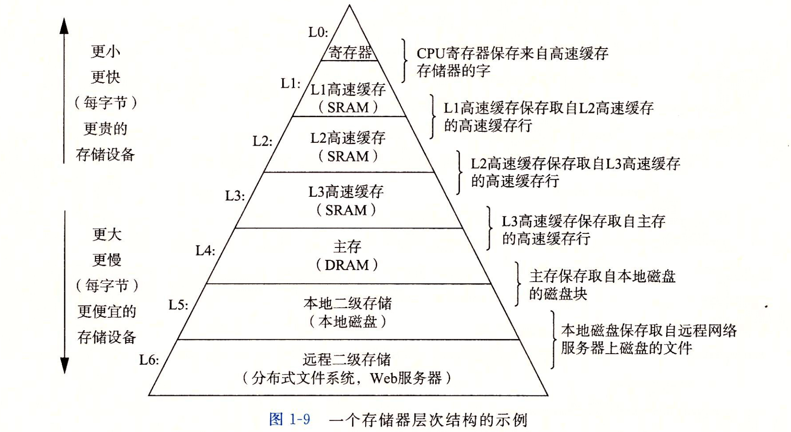
- CPU 寄存器：数据访问可以在 0 个周期内实现；
- 高速缓存：数据访问可以在 4~75 个周期内实现；
- 主存：数据访问可以在上百个周期内实现；
- 磁盘：数据访问可以在几千万个周期内实现；
- （Page：10）操作系统通过几个基本的抽象概念来管理硬件与应用程序：

- （Page：11）POSIX（The Portable Operating System Interface）标准：IEEE 曾努力标准化的 Unix 开发，由 Richard Stallman 命名。标准涵盖了包括：Unix 系统调用的 C 语言接口、Shell 程序和工具、线程与网络编程等多方面内容。
- （Page：12）进程的上下文切换：
- 由内核进行管理；
- 上下文包含很多信息，诸如：PC 和寄存器文件的当前值，以及主存的内容等。
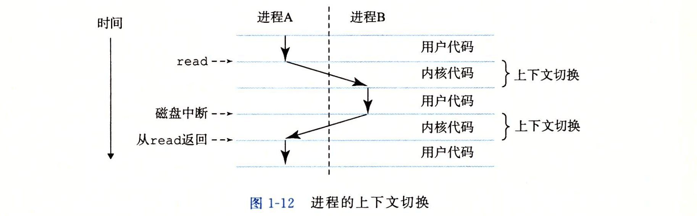
- （Page：12）线程共享同一进程的代码和全局数据（非 Thread-Local 数据）。
- （Page：13）进程虚拟地址空间（VAS）：
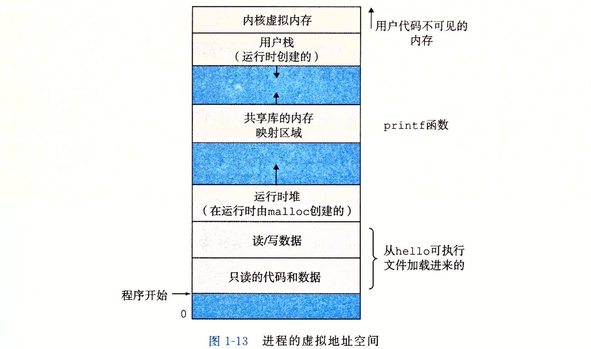
- 程序代码和数据：对于所有的进程，代码是从同一固定地址（32 位：0x08048000，64 位：0x400000）开始的。紧接着是和 C 全局变量（局部变量在“栈”上）相对应的数据位置；
- 堆：由低地址位向高地址位增长。由
std::malloc函数动态分配，由std::free释放； - 共享库：存放诸如 C 标准库和数学库等动态库（.so / .dylib）的代码及数据；
- 栈：由高地址位向低地址位增长。用于存放函数调用的栈帧、局部变量的值等；
- 内核虚拟内存：高地址段，为内核保留。
- （Page：14）每个 I/O 设备，包括磁盘、键盘、显示器，甚至网络，都可以看成是文件。系统中的所有输入输出都是通过使用一小组称为 Unix I/O 的系统函数调用读写文件实现的。
- （Page：16）Amdahl 定律（Amdahl’s Law）：当我们对系统的某个部分加速时，其对系统整体性能的影响取决于该部分的重要性和加速程度。要想显著加速整个系统，必须提升全系统中相当大部分的速度。
- （Page：17）并发（concurrency）和并行（parallelism）的三个层次（由高到低）：
- 线程级并发：构建在“进程”抽象之上。在多核心处理器的基础上，可以实现并行计算；
- 指令级并行：处理器可以同时执行多条指令。如果一个处理器可以达到“比一个周期一条指令更快的执行效率”，就称之为“超标量”处理器；
- 单指令，多数据并行（SIMD）：基于特殊的硬件，允许一条指令产生多个可以并行执行的操作。
- （Page：18）多核处理器结构：
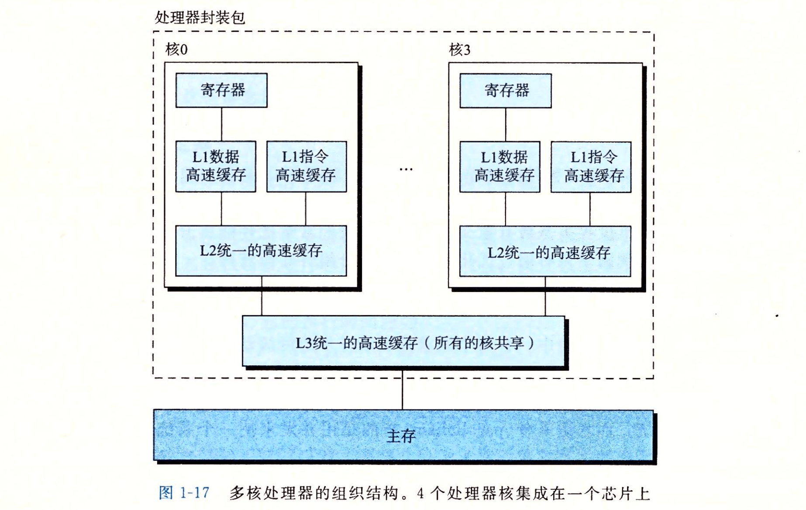
- 每个核有自己的 L1（比如分别保存最近用到的“指令”和“数据”）与 L2 高速缓存，它们共享 L3 缓存；
- 可以配合“超线程”技术来并行地执行多个控制流。
第二章、信息的表示和处理
- （Page：22）由于表示的精度有限，浮点数是不可结合的。整数的表示只能编码一个相对较小的数值范围，但却是准确的；而浮点数虽然可以编码一个较大的数值范围，但表示却是近似的。
- （Page：24）C 编译器维护着指针和该指针对应的类型信息，但实际生成的机器级程序却并不包含数据类型的信息。
- （Page：27）字长：指明指针数据的标称大小（决定了虚拟地址空间 VAS 的最大大小。w 位 -> 可寻址范围 0~2^w-1。32位：4 GB / 64位：16 EB）。
- （Page：27）（32位 / 64位）程序：区别在于该程序是如何编译的，而不是其运行的机器类型。
- （Page：28）ISO C99 引入了一类数据类型，其数据大小是固定的，不随编译器和机器设置而变化，如：
int32_t\int64_t等。C 标准不保证char类型的符号性。 - （Page：29）多字节对象的地址为所使用字节中最小的地址（低地址端）。
- （Page：29）许多较新的微处理器采用双端法，即可以将它们配置成小端或大端两种模式，但实际情况是一旦选择了特定的操作系统，那么字节序也就固定了下来。属于“小端”和“大端”来自于《格列佛游记》一书，其中交战的两个派别无法就应该从哪一端打开一个半熟的鸡蛋达成一致。
- （Page：33）通过命令
man ascii可以得到一张 ASCII 字符码的表。 - （Page：36）“位向量”的一个应用是可以用于表示“有限集合”（从右向左）：
a = [01101001] -> A = {0, 3, 5, 6}
b = [01010101] -> B = {0, 2, 4, 6}- 布尔运算 “|” 用于求得上述集合的并；
- 布尔运算 “&” 用于求得上述集合的交；
- 布尔运算 “~” 用于求得上述集合的补。
- （Page：40）逻辑右移与算数右移：前者在最高位补 0；而后者在最高位补最高有效位的值（可保持符号性）。几乎所有的编译器/机器组合都对有符号数使用算数右移，而无符号数则使用逻辑右移。Java 会对右移的类型进行明确的区分（>> 与 >>>）。
- （Page：44）补码（Two’s-complement）：其中最高有效位称为“符号位”，其“权重”为 -2^(w-1)（w 为位向量的长度）。
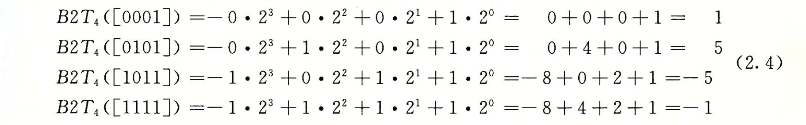
- 一个“补码”对应的数值为其所有负权重位（符号位）值与正权重位值的和；
- w 位补码所能表示的值范围：[10…0] … [01…1]。前者只有负权重位，正权重位均为零；后者负权重位为零，正权重位均为一。计算可得，其表示范围的符号性不对称。可表示负值多于正值（也可理解为“负零”被替换成了多一个的负数）。
- UMax(w) = 2TMax(w) + 1，最大的无符号数值刚好比补码的最大值的两倍大一点。
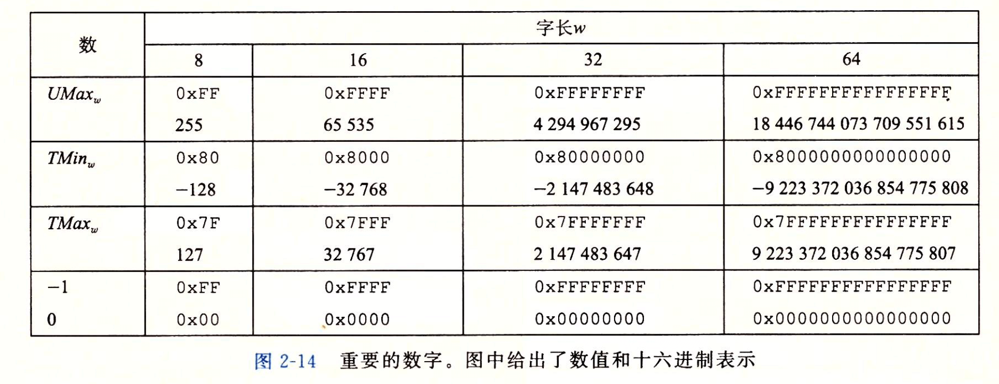
- 反码（Ones’ Complement）：除了 MSB 的权为 -(2^(w-1)-1) 以外，它和补码是一样的。原码（Sign-Magnitude）：最高有效位是符号位，用来确定剩下的位应该取负权还是正权。这两种表示方式都无法区分“正零”和“负零”；
- Two’s Complement：对于非负数 x，我们用 2^w-x（一个 2）来计算 -x 的 w 位表示；Ones’ Complement：用 [111…1]-x（多个 1）来计算 -x 的反码表示。
1111（[111...1]）
- 0101 原码（5）
------------------
1010 反码（-5）
10000（2^w）
- 0101 补码（5）
------------------
1011 补码（-5）- （Page：49）强制类型转换的结果保持位值不变，只是改变了解释这些位的方式。
int main(int argc, char** argv) {
short int v = -12345;
unsigned short uv = static_cast<unsigned short>(v);
std::cout << uv << std::endl; // 53191（与 -12345 的补码表示完全一致）.
return 0;
}- （Page：50）补码与无符号数的相互转换：

- 补码转换为无符号数：
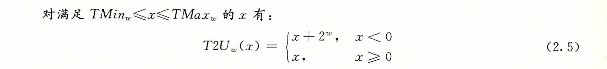
- 无符号数转换为补码：
- （Page：54）符号扩展（Sign Extension）与零扩展（Zero Extension）：前者在扩展时填充最高有效位的值；后者在扩展时填充 0。两者可以分别对应到算数右移与逻辑右移相似的逻辑。
- （Page：56）C 语言类型转换会“先转换数据大小，再转换符号性”：
short sx = -12345;
unsigned uy = sx; // (unsigned)(int)sx.- （Page：57）数字的截断：
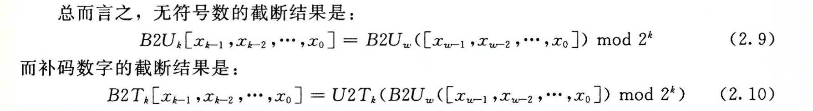
- 利用的一个性质：对于任何 i >= k，2^i mod 2^k = 0；
- 补码在截断时需要将最高位转换为符号位，因此值的符号性可能会发生改变。
- （Page：59）
size_t通常被定义为无符号类型。 - （Page：61）无符号数加法：
- 检测两个无符号数的和是否产生溢出：
int isUnsignedAdditionOverflow(unsigned short x, unsigned short y) {
unsigned short sum = x + y;
return sum < x ? 0 : 1;
}- 无符号数的“加法逆元”为：x（x=0）以及 2^w - x（x>0）。
- （Page：63）补码加法：
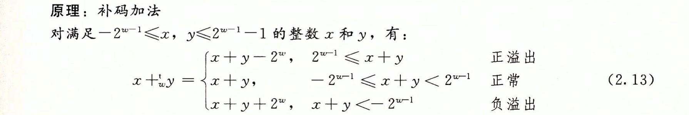
- 两个数的 w 位补码之和与无符号之和有完全相同的位级表示，大多数计算机使用相同的机器指令来执行有符号与无符号数加法；
- 检测两个有无符号数的和是否产生溢出：
int isSignedAdditionOverflow(short x, short y) {
short sum = x + y;
if (x > 0 && y > 0 && sum < 0) {
return 1; // 正溢出；
} else if (x < 0 && y < 0 && sum > 0) {
return -1; // 负溢出；
}
return 0;
}- （Page：66）对于 w 位的补码加法来说，TMin(w) 是自己的加法的逆。
TMin(w) + TMin(w) = -2^(w-1) + -2^(w-1) = -2^w (Overflow) = -2^w + 2^w = 0 - （Page：66）执行位级补码非（逆）的几种方式：
- 对每一位求补集（取反），然后再对结果加一（所有二进制位取反，结果加一）；
- 对最后一个 “1” 所在位置（不包括该位）左侧所有的位进行取反；
（不同于“求补码对应原码”的“符号位不变，取反再加一”）
- （Page：67）无符号乘法（截断为结果的低 w 位）：
- （Page：67）补码乘法（截断为结果的低 w 位）：
- 对于无符号和补码乘法来说，乘法运算的位级表示都是一样的（指截断后的剩余部分，即两个乘数的结果）。
- （Page：70）由于整数乘法相当慢（需要 3-10 个时钟周期），因此可以选择使用“位移+加法”组合的方式来实现：左移一个数值等价于执行一个与 2 的幂相乘的无符号乘法。（其中，减法也可以通过“求逆”的方式替换成加法）
// 一个乘法替换为三个位移和两个加法；
x*14 -> x*(2^3 + 2^2 + 2^1) -> (x<<3)+(x<<2)+(x<<1)
// 一个乘法替换为两个位移和一个减法；
x*14 -> x*(2^4 - 2^1) -> (x<<4)-(x<<1)- （Page：71）常数乘法优化：
- 对于某个常数 K 的表达式 x * K 生成代码：将 K 表示为二进制的一组 0 和 1 的交替：[(0…0)(1…1)(0…0)…(1…1)]，考虑一组从位置 n 到位置 m 的连续 1。可用如下形式的一种来计算这些位对乘积的影响（即将连续 1 的计算结果相加即可）。
- 形式 A：(x << n) + (x << (n - 1)) + … + (x << m)；
- 形式 B：(x << (n + 1)) - (x << m)。
- （Page：72）在大多数机器上，整数除法要比整数乘法更慢 — 需要30个或更多的时钟周期。
- 无符号除法（除以 2 的幂）：逻辑右移 k 位。（正数向下舍入）；
- 补码除法（除以 2 的幂）：先加入偏置量（2^k - 1），再算数右移 k 位。（负数向上舍入）；
- 使用“位移”和“加减法”实现“除以 2 的幂”：
int xDiv2k(int x, int k) {
return (x < 0 ? x + (1 << k) - 1 : x) >> k;
}- （Page：76）小数的二进制表示法只能表示那些能够被写成 x * 2^y 的数，其他的值只能够被近似表示。而增加二进制表示的长度可以提高表示的精度。（以下为数字 “1/5” 的近似小数表示）
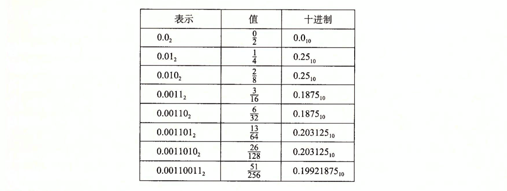
- （Page：78）IEEE-754 浮点数单精度浮点表示（其他类似）：
- 表示形式：V = (-1)^s \ M * 2^E*（s-符号位，E-阶码，M-尾数）；
- 偏置形式：阶码值为 E=e-Bias，其中 Bias 的值为 2^(k-1)-1。单精度 E 范围为 -126~+127，双精度为 -1022~+1023（e 为阶码部分表示的无符号整数值，k 为阶码部分的位数）；
- 隐式以 “1” 开头的尾数：尾数定义 M=1+f，其中的 “1” 被隐式表示，并没有占用尾数的精度位；
- 非规格化数：阶码值为 E=1-Bias，尾数为 M=f（无隐式 “1”）。该类型的值可用于表示值 “0”，但由于符号位的存在，会得到 “+0” 与 “-0”。另一个用途可用于表示非常接近 0.0 的数；
- 特殊值：无穷大值和 NaN；
- IEEE-754 对浮点数值的格式设计（偏置阶码+尾数）可以让我们通过整数排序函数来排序浮点数。
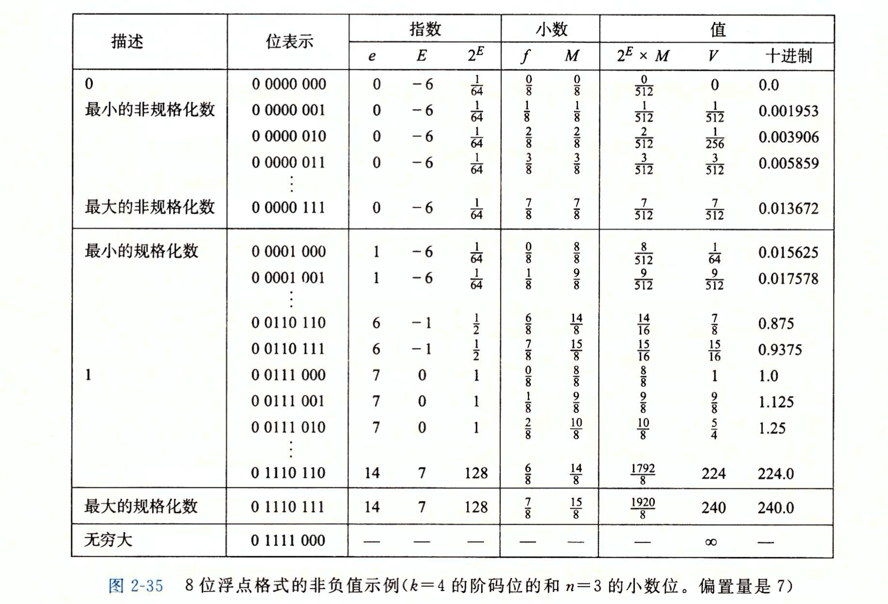
- M = 1 + f；
- 浮点数 0.0 与整数 0 的位模式完全一样。
- （Page：82）整数到单精度浮点数的转换：
12345（原始十进制数）
[11000000111001]（展开二进制）
12345 = 1.1000000111001 * 2^13（浮点数二进制表示）
[10000001110010000000000]（丢弃个位数 “1”，补充小数字段）
[1000110010000001110010000000000]（计算阶码字段，幂+偏置阶码）
[01000110010000001110010000000000]（添加符号位）- （Page：82）浮点数的舍入（Rounding）：
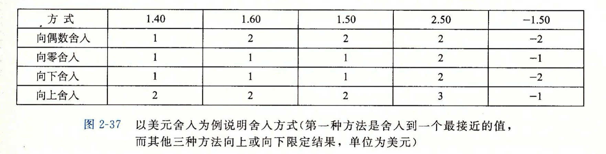
- 舍入：通过一种系统的方法，找到某个值的“最接近”浮点数匹配值；
- 向偶数舍入（向最接近的值舍入）：可以避免大量浮点类型数据在进行舍入时引入的统计偏差。在二进制小数中，0 位被认为是偶数，1 位被认为是奇数。只有对形如
XX...X.YY...Y100..（最右的 Y 是要被舍入的位置）的二进制位模式的数，这种舍入方式才有效； - 从
float或double转换为int，值会“向零舍入”。一个从浮点数到整数的转换，如果不能为浮点数找到合理的整数近似值，可能会使用 “TMin(w)”（整数不确定值）作为代替。
- （Page：85）IEEE-754 中定义 1/-0 将得到负无穷，而 1/+0 将得到正无穷；“无穷”和 NaN 无逆元。
- （Page：85）浮点数的乘法和加法是不可结合和不可分配的（指全范围内）：
// 超过最大安全数（小数位全为 1）的范围；
(3.14 + 1e209) - 1e209 // 0.
3.14 + (1e209 - 1e209) // 3.14.第三章、程序的机器级表示
- （Page：109）编译器基于编程语言的规则（语法语义）、目标机器的指令集（ISA）和操作系统遵循的惯例（Calling Convention），经过一系列的阶段生成机器代码。
- （Page：110）IA32 为 X86-64 的 32 位前身，是 Intel 于 1985 年提出的。
- （Page：110）当前的 64 位机器能够使用多达 256TB（2^48 字节）的内容空间，而且很容易就可以扩展至 16EB（2^64 字节）。在目前的实现中，虚拟地址的高 16 位必须设置为 0（canonical-address）。
- （Page：111）8087 协处理器（FPU）建立了 X86 系列的浮点模型，通常被称为 “X87”。浮点运算寄存器：SSE -> SSE2 -> AVX -> AVX2 -> AVX512（这些也同时被作为 SIMD 寄存器，最初的为 MMX）。
- （Page：115）汇编代码：
- Clang 生成汇编代码（-S）：
clang++ -S -std=c++2a <file>- ATT 与 Intel 汇编代码格式区别：
- Intel 代码省略了指示大小的后缀，如
push与pushq； - Intel 代码省略了寄存器名字前的 “%”，如 rbx 与 %rbx；
- Intel 代码用不同的方式描述内存中的位置，如 “QWORD PTR [rbx]*” 与 “(%rbx)*”；
- Intel 代码的操作数列出顺序与 ATT 相反。
- Intel 代码省略了指示大小的后缀，如
- （Page：116）X86-64 的指令长度为 1-15 个字节不等。
- （Page：119）由于是从 16 位体系结构扩展成 32 位的，Intel 用术语“字（word）”来表示 16 位数据类型。因此 32 位数为“双字”，64 位数为“四字”。
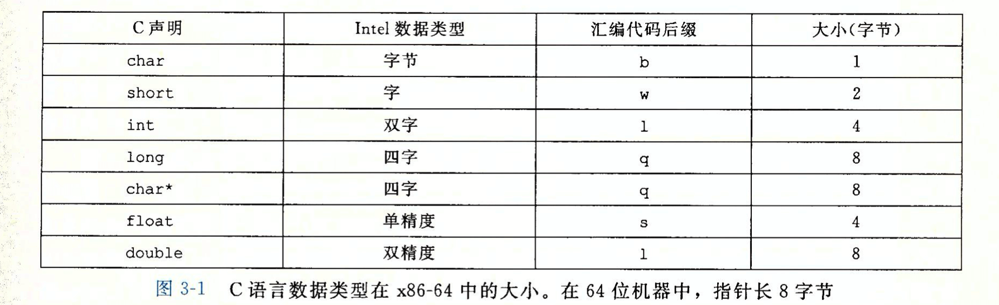
- 后缀 “l” 用来表示双字，因为 32 位整数被看成是“长字（long word）”；
- （Page：120）通用目标寄存器：
- 可用来保存整数或指针（从位模式上来讲也可以存储浮点数，但浮点数的计算和操作有专门的特殊寄存器）；
- 生成 1 字节和 2 字节数字的指令会保持剩下的字节不变；生成 4 字节数字的指令会把高 4 字节置零，如 movl 指令（作为 IA32 到 X86-64 的扩展）；
- Callee-saved 寄存器 rbx \ rbp \ r12-r15 必须由被调用方保存状态，并在结束前重置（指如果在函数调用过程中被修改的话。其中 rsp 不推荐使用）；Caller-saved 寄存器 r10 \ r11 的内容视情况保存和恢复。
- （Page：121）操作数格式（R 表示寄存器的值，M 表示将该值作为地址，即该地址存放的值）：
- Imm(rb, ri, s) 是最常用的内存寻址格式，其中 Imm 为偏移（displacement）立即数，rb 为基址寄存器，ri 为变址寄存器，比例因子为 s，其取值必须为 1 / 2 / 4 / 8。有效地址为：Imm + R[rb] + R[ri] \ s*；
mov rax, [rdx + 8 * rcx + 42]- （Page：122）数据传送指令：
; ATT 汇编；
movl $0x4050, %eax
movw %bp, %sp
movb (%rdi, %rcx), %al
movb $-17, (%rsp)
movq %rax, -12(%rbp)- X86-64 下传送指令的两个操作数不能都指向内存位置；
- 除上述之外，还存在诸如
movzbw（零扩展，字节到字）与movsbl（符号扩展，字节到双字）等用于将较小的源值（寄存器/内存）复制到较大的目的寄存器时使用的指令；- 零扩展移动：
movzbw/movzbl/movzwl/movzbq/movzwq； - 符号扩展移动：
movsbw/movsbl/movswl/movsbq/movswq/movslq/cltq。
- 零扩展移动：
movq无法直接移动 64 位的立即数，它只能以表示为 32 位补码数字的立即数作为源操作数，然后将这个值“符号扩展”得到 64 位的值，放到目的位置。取而代之可以使用movabsq但目的只能为寄存器（因此，将一个 64 位立即数放到内存中需要两条指令）；- 没有用于零扩展双字到四字（movzlq）的指令，因为可以直接用
movl指令来实现（默认情况下，64 位寄存器的高 4 字节会自动置零）； cltq指令没有操作数，它可以直接将 %eax 的值符号扩展并存放到 %rax 中。相较其他指令的相同实现，编码更加紧凑。
- （Page：127）栈操作：
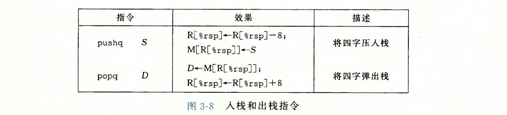
- 栈向低地址方向增长；
push和pop可以由相应的移动和算数指令来实现，但前者的编码仅需要一个字节；pop只会影响 %rsp 的值，而不会实际清除栈中存放的数据（后续会被覆盖）。
- （Page：129）算数和逻辑操作：
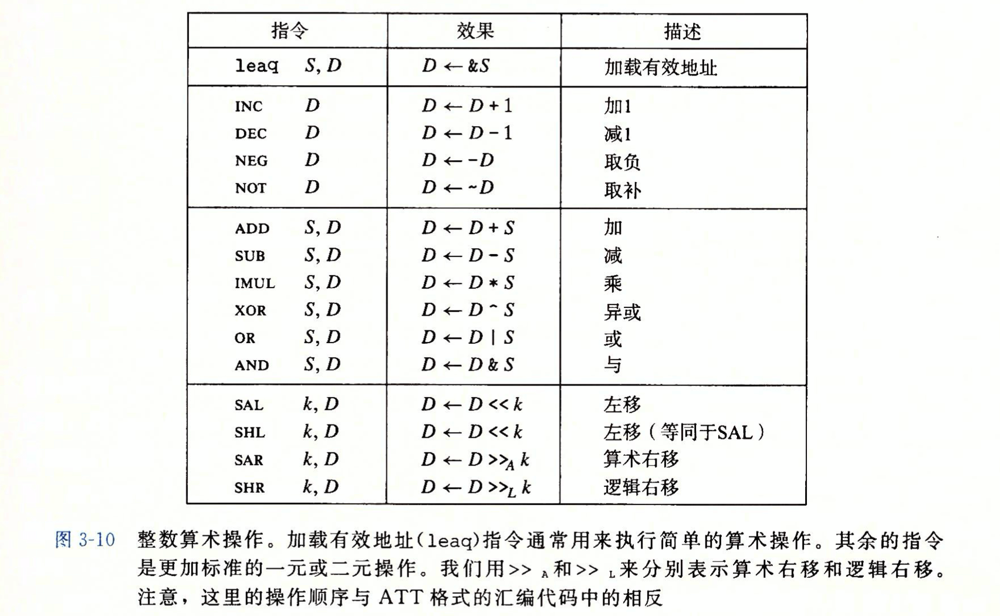
- 除加载有效地址指令
leaq外的其他指令均有对应不同操作数大小的变种，如addb、addw等； leaq也可被用于与“加载有效地址”无关的操作，比如“简单算数操作”，但不会改变 rflags 寄存器的状态；
; R(%rax) = 5 * R(%rdx) + 7.
leaq 7(%rdx, %rdx, 4), %rax- 二元操作的第一个操作数可以是立即数、寄存器或内存位置。第二个操作数可以是寄存器或内存位置（即：所有符合语义的用法都支持）；
; 从 %rdx 中减去 %rax；
subq %rax, %rdx- 移位操作的移位量可以是一个立即数，或者放在单字节寄存器 %cl 中。后者的有效移位量是由其低 m 位决定的，而 2^m = w（w 为数据位长，比如
salb对应的 8 位，salw对应的 16 位等）。
- （Page：133）特殊的算数操作：
imulq指令有两种不同的形式。第一种为双操作数，不区分符号，用于从两个 64 位操作数中产生一个 64 位的乘积（阶段后位模式相同）；另一种为单操作数，区分符号，用于计算两个 64 位值的“全 128 位乘积”，要求一个参数必须在 %rax 中，结果分别放置在 %rdx（高位）与 %rax（低位）中；- 类似单操作数乘法，有符号除法指令
idivq将寄存器 %rdx（高 64 位）与 %rax（低 64 位）联合组成的 128 位数作为被除数。除数作为操作数给出，结果的商存放在 %rax 中，余数存储在 %rdx 中。指令cqto可用于将 %rdx 填充为 %rax 的符号位（当仅需要 64 位被除数时）。无符号除法使用divq指令，寄存器 %rdx 会被事先设置为 0。注：其他的单操作数除法指令还有idiv\idivl。
- 一个除法的例子：
void remdiv(long x, long y, long *qp, long *rp) {
long q = x / y;
long r = x % y;
*qp = q;
*rp = r;
}对应的汇编代码：
; void remdiv(long x, long y long *qp, long *rp)
; x in %rdi, y in %rsi, qp in %rdx, rp in %rcx
remdiv:
movq %rdx, %r8 ; Copy qp.
movq %rdi, %rax ; Move x to lower 8 bytes of dividend.
cqto ; Sign-extend to upper 8 bytes of dividend.
idivq %rsi ; Divide by y.
movq %rax, (%r8) ; Store quotinent at qp.
movq %rdx, (%rcx) ; Store remainder at rp.
ret- （Page：136）CMP 指令（
cmpb\cmpw\cmpl\cmpq）与 SUB 指令的行为是一致的（判断基于减法的结果值），只是前者不会更改目的寄存器的值。 - （Page：136）TEST 指令（
testb\testw\testl\testq）与 AND 指令的行为是一致的（判断基于“算数与的结果值”），只是前者不会更改目的寄存器的值。典型的用法是：(1) 两个操作数是一样的，测试操作数的正负性；(2) 其中一个是一个掩码，用来指示哪些位应该被测试。 - （Page：136）条件码的三种使用方式：
- 根据条件码的某种组合，将一个字节（寄存器低位或某个内存位置）设置为 0 或 1。
- 有符号比较与无符号比较会使用不同的标志位（有符号：SF\OF，无符号：CF\ZF）；
- 比较指令（CMP）可用于影响全部的 SET 命令；
- 以
setg为例，其设置条件 “~(SF^OF)&~ZF” 对于有符号数分为两种情况，即：结果是正数且无溢出，或结果是负数且“上溢出”。
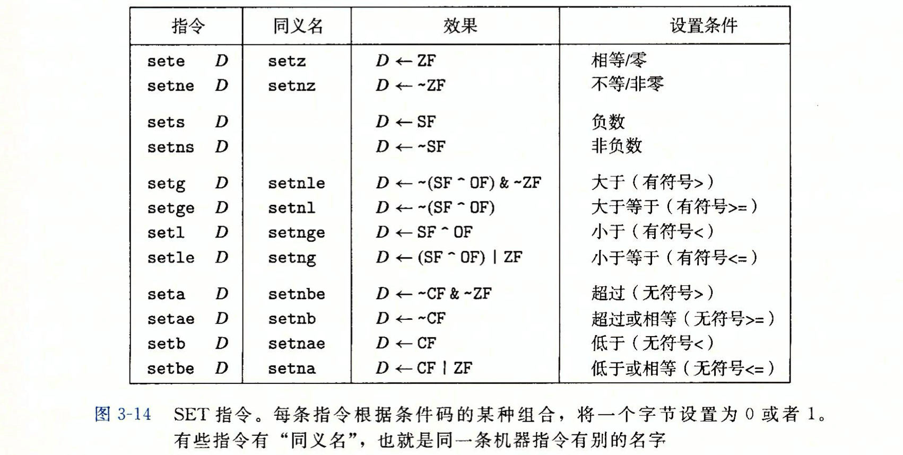
; int comp(data_t a, data_t b)
; a in %rdi, b in %rsi.
comp:
cmpq %rsi, %rdi ; Compare a:b (%rdi - %rsi).
setl %al ; Set low-order byte of %eax to 0 or 1.
movzbl %al, %eax ; Clear rest of %eax (and rest of %rax).
ret- 可以条件跳转到程序的某个其他部分：
- 跳转指令的 “PC 相对”（PC-relative）编码：将目标指令的地址与紧跟在跳转指令后面那条指令的地址之间的差作为编码。指令编码很简洁，且目标代码可以不做更改就移动到内存的不同位置；
- 跳转指令的“绝对地址”编码：用 4 个字节直接指定目标；
jmp *Operand中的 Operand 指定了一个内存位置，如jmp *.L4(,%rsi,8)表明跳转到由 .L4 所在地址加上偏移 “R(%rsi) * 8” 位置处的值所代表的地址处。
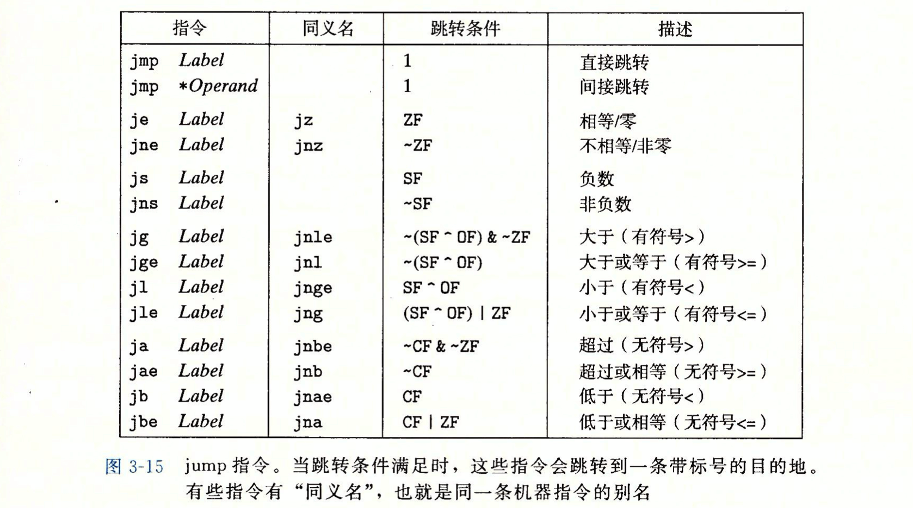
- 可以有条件地传送数据：
- 性能会比基于条件控制转移的代码要好（控制流不依赖于数据）；
- 汇编器可以从目标寄存器的名字推断出条件传送指令的操作数长度，因此对于所有的操作数长度，都可以使用同一个指令名字；
- 每个条件传送指令都有两个操作数：源寄存器或内存地址 S，和目的寄存器 R；
- 需要对所有分支进行求值。
; long absdiff(long x, long y)
; x in %rdi, y in %rsi.
absdiff:
movq %rsi, %rax ; y.
subq %rdi, %rax ; rval = y-x.
movq %rdi, %rdx
subq %rsi, %rdx ; eval = x-y.
cmpq %rsi, %rdi ; Compare x:y.
cmovge %rdx, %rax ; If >=, rval = eval.
ret ; Return tval.- （Page：152）while 语句的两种实现方式（for 循环可以用类似的方式实现）：
- jump-to-middle：通过无条件跳转跳到循环结尾处的测试，来首先执行初始的测试。
; long fact_while(long n)
; n in %rdi.
fact_while:
movl $1, %eax ; Set result = 1.
jmp .L5 ; Goto test.
.L6: ; loop:
imulq %rdi, %rax ; Compute result *= n.
subq $1, %rdi ; Decrement n.
.L5: ; test:
cmpq $1, %rdi ; Compare n:1
jg .L6 ; If >, goto loop.
rep; ret ; Return.- guarded-do（高优化等级使用的策略）：首先用条件分支，如果初始条件不成立就跳过循环，否则再把代码变换成 do-while 循环（有两次条件判断过程）。
; long fact_while(long n)
; n in %rdi.
fact_while:
cmpq $1, %rdi ; Compare n:1.
jle .L7 ; If <=, goto done.
movl $1, %eax ; Set result = 1.
.L6: ; loop:
imulq %rdi, %rax ; Compute result *= n.
subq $1, %rdi ; Decrement n.
cmpq $1, %rdi ; Compare n:1.
jne .L6 ; If !=, goto loop.
rep; ret ; Return.
.L7: ; done:
movl $1, %eax ; Compute result = 1.
ret ; Return.- （Page：159）Switch 语句可以使用“跳转表”（Jump Table）来实现。跳转表是一个数组，表项 i 是一个代码段的地址，这个代码段实现当开关索引值等于 i 时程序应该采取的动作。当 case 子句大于 4 且值的范围跨度较小时，就会使用跳转表。
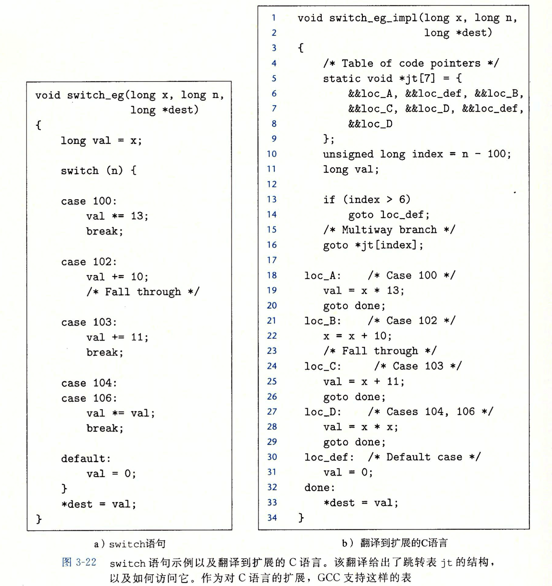
- 上述右侧代码中的数组 “jt” 会被放置在可执行文件的 .rodata 段中；
- 将会使用“间接跳转”的方式来跳转到某一“跳转表”项所指定的位置。
- （Page：165）通过寄存器，“过程”之间可以最多传递 6 个整数值。许多函数甚至不需要“栈帧”（返回地址属于上一个函数，即调用函数的栈帧），当所有的局部变量都可以保存在寄存器，而且该函数不会调用任何其他函数时（叶子过程），便可以这样处理。
- （Page：165）转移控制指令：
callq指令会将调用者的返回地址（紧跟在callq之后的地址）压入栈中，并将 PC 设置为新函数的起始地址。对应的retq指令会从栈中弹出一个地址，并将 PC 设置为该地址；- 通过栈传递参数时，所有分配的数据大小都向 8 的倍数对齐（而栈帧中的局部变量则不需要对齐）。而存放参数的具体顺序，则依据不同的“调用约定”而不同。在 cdecl 下是“从右往左”（RTL）的；
- 局部变量必须存放在栈内存中的情况：
- 寄存器不足够存放所有的本地数据；
- 对一个局部变量使用地址运算符 “&”，因此必须为其产生一个地址；
- 某些局部变量是数组或结构体，必须能够通过数组或结构体引用被访问到。
- （Page：177）数组引用及对应汇编代码：
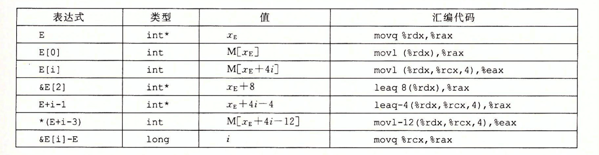
- 数组元素在内存中按照“行优先”的顺序排列。即在内存中首先排列着索引 “0” 对应的一行元素，接下来是索引 “1”，以此类推；
- 编译器对于定长数组之间的计算，可以通过优化来减少局部变量的使用（去掉局部索引变量、将数组引用替换为指针间接引用等）；
- 对于 C99 中的“动态数组（VLA）”，编译器需要使用“乘法指令”而非“移位”和“加法”来对引用的数组地址进行伸缩（性能稍低）。而在循环结构中使用时，编译器常常可以利用访问模式的规律性来优化索引的计算，比如直接识别出访问多维数组的步长，从而避免使用乘法指令进行计算的过程，以提高性能。
- （Page：187）一个联合（union）的总大小等于它最大字段的大小。可以用来以一个对象来表示多个不同的“互斥量”。
// 一个二叉树节点；
typedef enum { N_LEAF, N_INTERNAL } nodetype_t;
struct node_t {
nodetype_t type; // 标记当前联合的类型；
union {
struct {
struct node_t *left;
struct node_t *right;
} internal; // 内部节点；
double data[2]; // 叶子节点；
} info;
};- 当用联合来将各种不同大小的数据类型结合到一起时，字节顺序（大小端）问题就变得很重要了。
double uu2double(unsigned wordA, unsigned wordB) {
union {
double d;
unsigned u[2];
} temp;
temp.u[0] = wordA; // 小端，则为低 4 位；
temp.u[1] = wordB; // 小端，则为高 4 位；
return temp.d;
}- （Page：189）数据对齐：原则是任何 K 字节的基本对象的起始地址必须是 K 的倍数。另外，编译器还会对结构体的末尾进行一些填充，以满足在结构体数组中每个元素的对齐要求。
.section .rodata
.align 8 ; 保证后面数据的起始地址为 8 的倍数；
.L4:
.quad .L3 ; 表项长 8 个字节；
.quad .L8struct S {
int i; // 偏移 0 字节；
char c; // 偏移 4 字节；
int j; // 对齐到 8 字节（填充 3 字节）；
};- 某些型号的 Intel 和 AMD 处理器对 SSE 指令集的操作，有强制的 16 字节对齐要求。因此导致：
- 任何内存分配函数生成的块的起始地址必须是 16 的倍数；
- 大多数函数的栈帧边界必须是 16 的倍数。
- （Page：192）指针相关：
- 指针类型不是机器代码的一部分（仅映射到不同的指令）；
- 取地址 “&” 一般通过
leaq指令来实现； - 强制类型转换的一个效果是改变指针运算的伸缩；
- 函数指针的值是该函数机器代码表示中第一条指令的地址。
- （Page：196）使用 fgets 函数代替 gets 函数以防止“缓冲区溢出”错误（可通过溢出来替换栈上的返回地址，达到攻击的效果）。
- （Page：198）一些对抗缓冲区溢出攻击的机制：
- 栈随机化：是 ASLR 技术（程序每次运行时，包括程序段、代码段、栈、全局变量和堆都会被加载到内存的不同区域）的一种，使得栈的位置在程序每次运行时都有变化。实现方式是：程序开始时，在栈上分配一段 0~n 字节之间的随机大小的空间。程序不使用这段空间，但会使程序每次执行时后续的栈位置发生变化。但 “nop sled” 却可以瓦解这种保护（利用长串的
nop指令使返回地址的命中率升高，而一旦栈帧返回到了该指令中，则随着指令的执行，%rip 一定会执行到后面紧跟的恶意代码部分）：
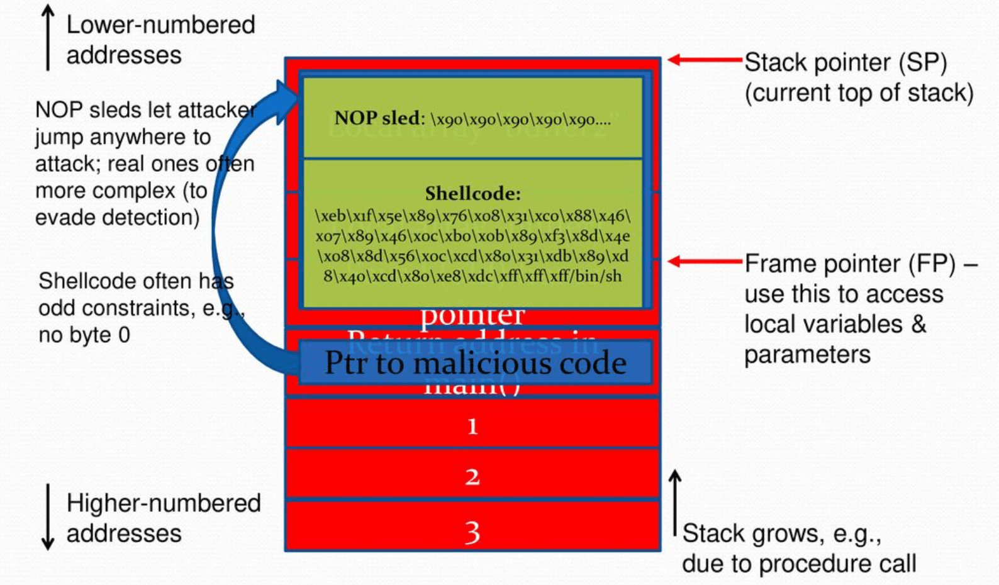
- 栈破坏检测：在栈帧中任何局部缓冲区与栈状态之间存储一个特殊的“金丝雀”值（每次程序运行时产生）。而在从函数返回之前，程序会检查这个值是否被修改，若是则程序异常中止。金丝雀值会被存放在特殊的段中，并被标记为“只读”。
- 限制可执行代码区域：通过分页表中的 “EXB/NX” 位来标记内存段是否可执行，这样可以将栈区域设置为“不可执行”。而检查页是否可执行是由硬件来进行的，没有效率损失。
- （Page：201）在不使用 %rbp（栈帧寄存器、基指针）时，编译器必须能够计算出在退出“子函数”前需要释放的栈高度，这需要能够在静态分析情况下分析出子函数局部变量的内存使用情况。否则，则需要通过 %rbp 来释放栈。（在较早的 X86 代码中，每个函数都使用基指针，但现在仅在栈帧长度可变的情况下才会使用）
; 等同于 leave；
movq %rbp, %rsp
popq %rbp- （Page：204）浮点体系结构与寄存器：
- MMX（MM 寄存器，64 位）；
- SSE（Streaming SIMD Extension，流式 SIMD 扩展。XMM 寄存器，128 位）；
- AVX（Advanced Vector Extension，高级向量扩展。YMM 寄存器，256 位）；
- XMM 寄存器 %xmm0~%xmm7 最多可以传递 8 个浮点参数，多余的可以通过栈进行传递；
- 所有的 XMM 寄存器都是 Caller-saved 的，即被调用者可以不用保存就覆盖这些寄存器的值；
- 浮点数返回值放置在 %xmm0 中。
- （Page：206）浮点传送和转换操作（以下均为 AVX2 浮点指令集）：
; float float_mov(float v1, float* src, float* dst)
; v1 in %mm0, src in %rdi, dst in %rsi.
float_mov:
vmovaps %xmm0, %xmm1 ; Copy v1.
vmovss (%rdi), %xmm0 ; Read v2 from src.
vmovss %xmm1, (%rsi) ; Write v1 to dst.
ret ; Return v2 in %xmm0.vmovaps中的 “a” 表示 “aligned”；
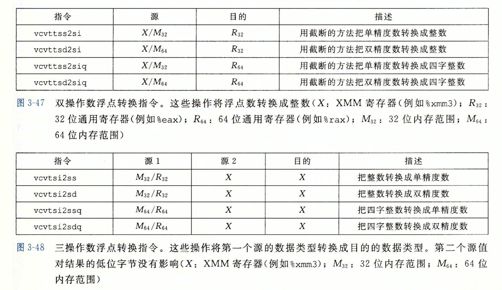
- 三操作数浮点转换整数指令中的第二个源，仅影响结果的高位字节。常用的场景下，该参数与第三个参数相同；
vcvtss2sd用于将单精度转换为双精度值；vcvtsd2ss用于将双精度转换为单精度值。
- （Page：210）浮点运算操作：
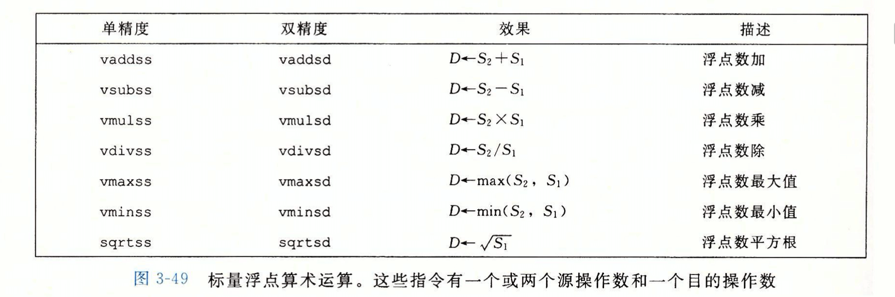
- 第一个源操作数 S1 可以是一个 XMM 寄存器或一个内存位置，第二个源操作数和目的操作数必须是 XMM 寄存器。
- （Page：212）浮点数常量：AVX 浮点数操作不能直接以立即数作为操作数。因此，编译器必须为所有的常量值分配和初始化存储空间，然后使用时从内存中读取。
; double cel2fahr(double temp)
; temp in %xmm0.
cel2fahr:
vmulsd .LC2(%rip), %xmm0, %xmm0 ; Multiply by 1.8.
vaddsd .LC3(%rip), %xmm0, %xmm0 ; Add 32.0.
ret
.LC2:
.long 3435973837 ; Low-order 4 bytes of 1.8.
.long 1073532108 ; High-order 4 bytes of 1.8.
.LC3:
.long 0 ; Low-order 4 bytes of 32.0.
.long 1077936128 ; High-order 4 bytes of 32.0.- （Page：212）浮点数的位级操作：
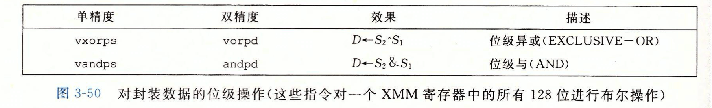
- 这些指令更新整个目的 XMM 寄存器，即对两个源寄存器的所有位都实施指定的位级操作。
- （Page：213）浮点数的比较操作：
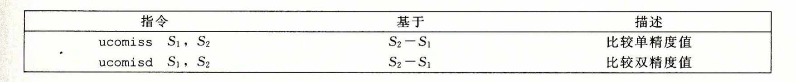
- 参数 S2 必须在 XMM 寄存器中，而 S1 可以在 XMM 寄存器中，也可以在内存中；
- 浮点比较指令会设置：零标志位 ZF \ 进位标志位 CF \ 奇偶标志位 PF（最近一次算数或逻辑运算产生值的最低位字节有偶数个 1；或当两个操作数中任一个为 NaN 时被置位）；
jp指令（jump on parity，对应 PF）可用于当浮点比较得到一个“无序”结果（任意操作数为 NaN）时进行跳转。